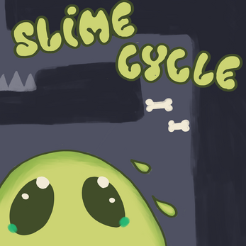
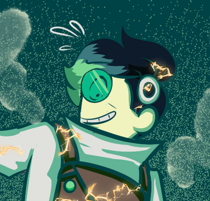
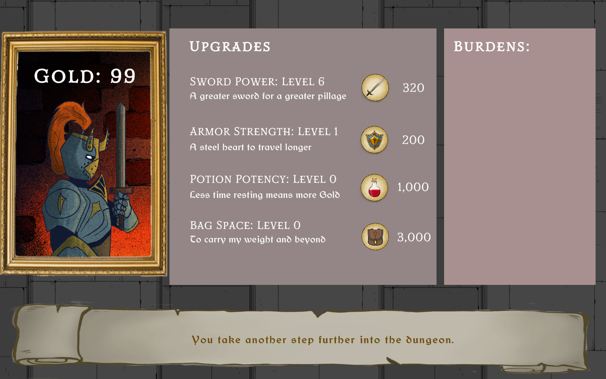
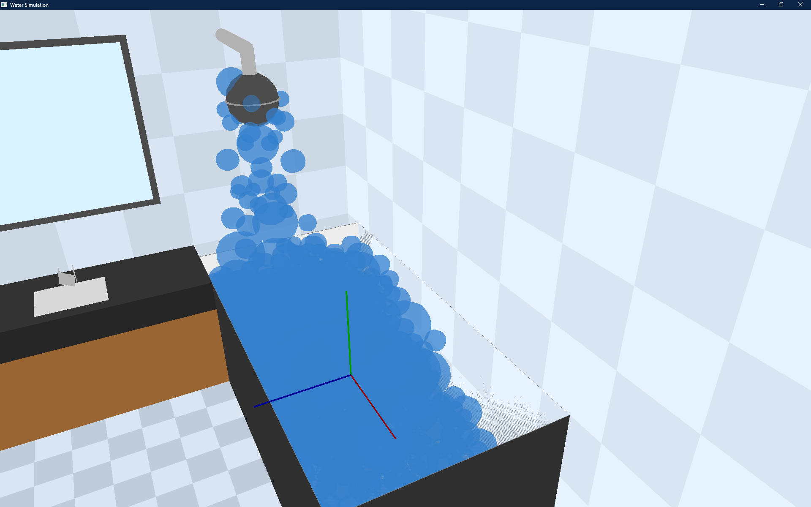
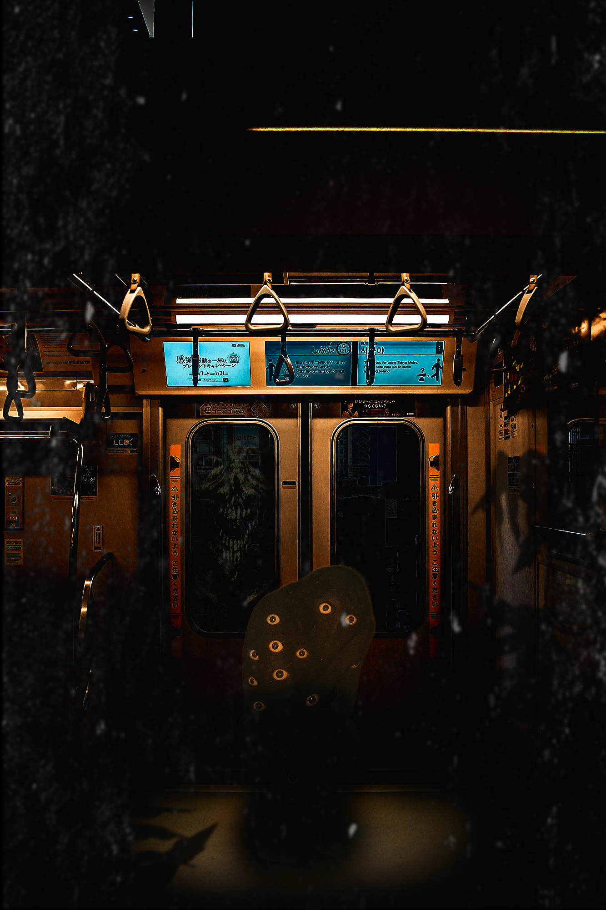
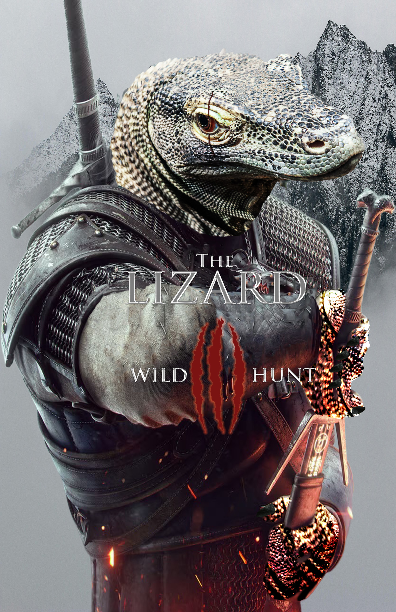

Slime Cycle (SAU Game Jam 2023)

Developed a 2D platformer as the lead programmer, focusing on implementing tight player movement mechanics and custom gravity physics. Play Slime Cycle



Developed a 2D platformer as the lead programmer, focusing on implementing tight player movement mechanics and custom gravity physics. Play Slime Cycle

Collaborated with a team of 4 as the lead debugger. Designed level layouts and scripted core behaviors using GDscript and Python within the Godot engine. Play Dimensional Disaster

Lead programmer for a Unity-based clicker game. Focused on random event programming, idling mechanics, and burden systems to create engaging progression loops. Play Bear The Burden (dev note: esc+z whenever burdens come up)

This is my OpenGL water sim project. I worked on the particle movement, got collisions working with the scene, and added camera controls so you can move around and look at it from different angles.
Repository: OpenGL Water Simulation Project


These are my Adobe/Photoshop practice pieces from class. I was mainly focused on getting better with composition, color, and cleaner layouts each round.
.png)
I tried to push this one further than the exercises and make it feel more polished overall.